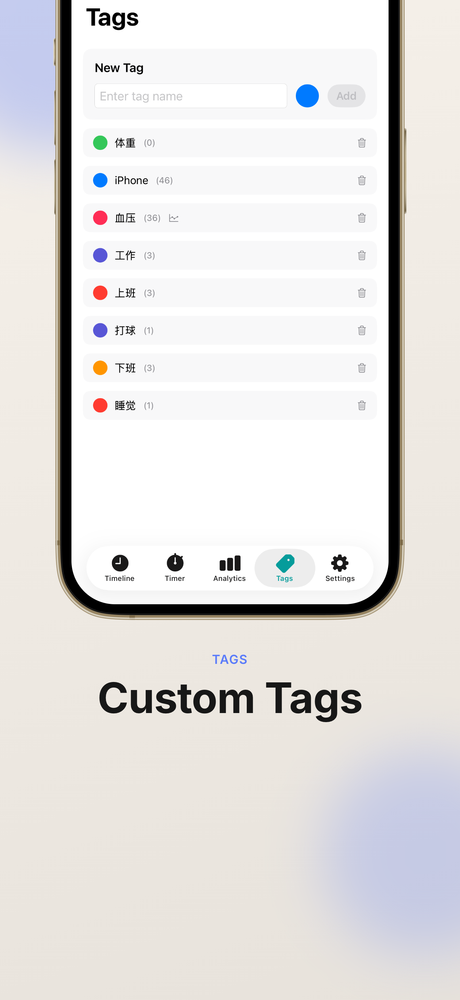
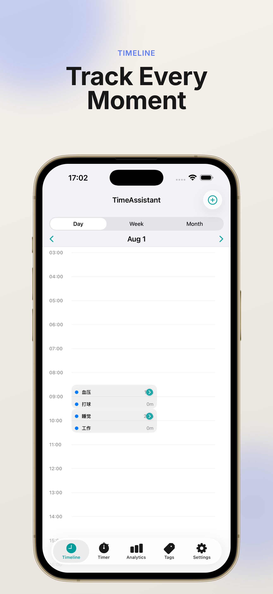
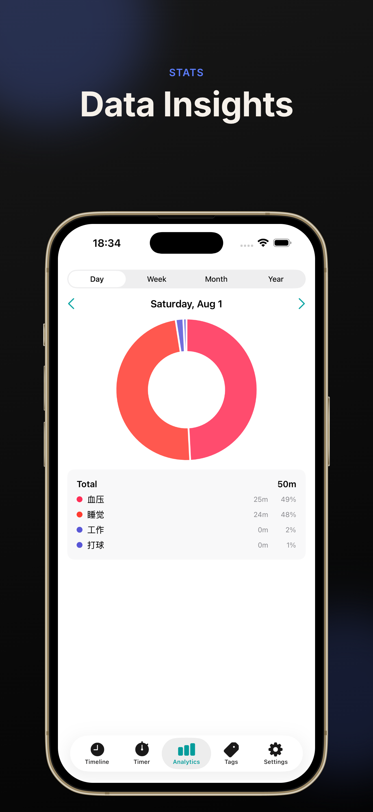
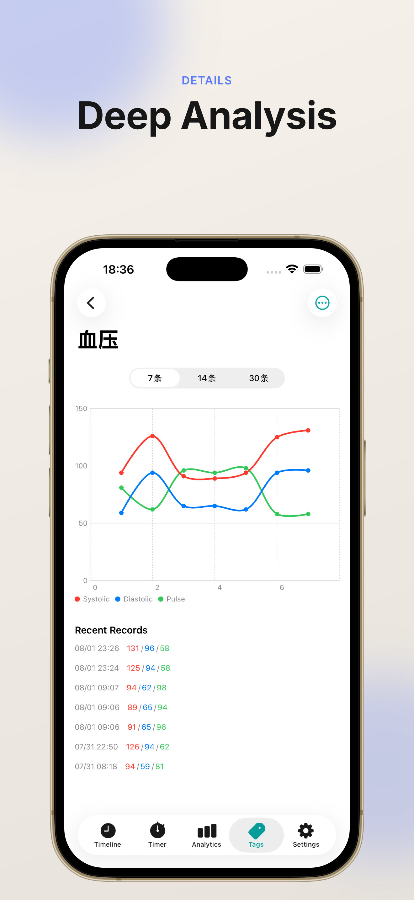

Timeline view
See your day at a glance. Switch between day, week, month, and year views to review how time is actually spent.
A clean, native time tracker with a timeline view, custom tags, a built-in timer, blood pressure OCR, and optional iCloud sync. Built for people who care where their time goes.



A focused, uncluttered interface that stays out of the way.
See your day at a glance. Switch between day, week, month, and year views to review how time is actually spent.
Log time intervals or single time points. Add custom tags like #work or #study, and filter the timeline to focus on what matters.
Donut charts and breakdowns across day, week, month, and year — understand your time allocation at a glance.
Snap a photo of your blood pressure monitor and TimeFlow reads systolic, diastolic, and pulse on-device. Weight logging follows the same template-driven flow.
One tap to start tracking. Save preset activities so logging a work session or workout takes no thought at all.
Optional CloudKit sync keeps your records aligned across iPhone, iPad, and Mac, in your private iCloud database.
Export your records as PDF for sharing, printing, or long-term archiving.
Use system dictation to enter records, or set up Siri shortcuts to start and stop the timer hands-free.
Built with SwiftUI. Follows your system appearance, with smooth animations and the details you'd expect from a first-party Apple app.
From the first launch to your first analytics chart in just a few minutes.
Tap the + button to log a new time interval or a single time point.
Use #work, #study, #exercise or any custom tag to categorise activities and make filtering effortless.
Switch to the Timer tab to start tracking an activity in real time — the record is created automatically when you stop.
Open Analytics to see how your time is distributed across days, weeks, months, and years.
From timeline and timer to blood pressure OCR — every key flow in one view.



TimeFlow is local-first and only syncs to your own iCloud when you ask it to. No accounts, no ads, no third-party trackers.

Search for “TimeAssistant” on the App Store and make every minute count.